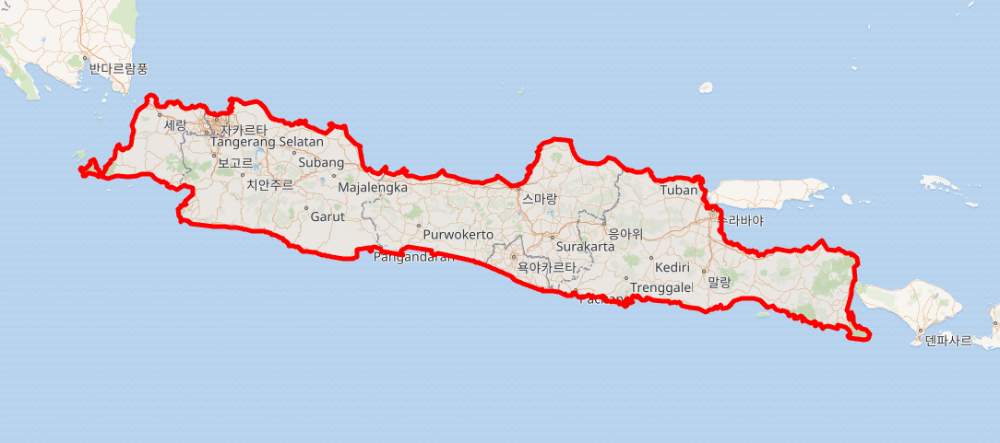

수도섬인 자카르타. 지도에 보이는 연두색 지형을 제외하면 평지에 가까운 섬.
예상대로라면 3cm씩 가라앉는걸로 판단하고 대비책을 짜던 중
25년 기준으로 갑자기 1년에 13cm씩 바다 밑으로 수몰되는걸 발견
이대로라면 2080년경에는 대부분의 지역이 바닷속 비키니시티로 강제이주 당할 예정
물론 신수도를 다른 섬으로 옮기려고 했으나 정치권력의 긴빠이와 전국민 대상 급식 프로젝트로 예산이 박살나서 신수도 및 이주계획도 좌초 위기

닭팔아서 전투기사듯 닭팔아서 수도천도해랔ㅋㅋㅋㅋㅋㅋ